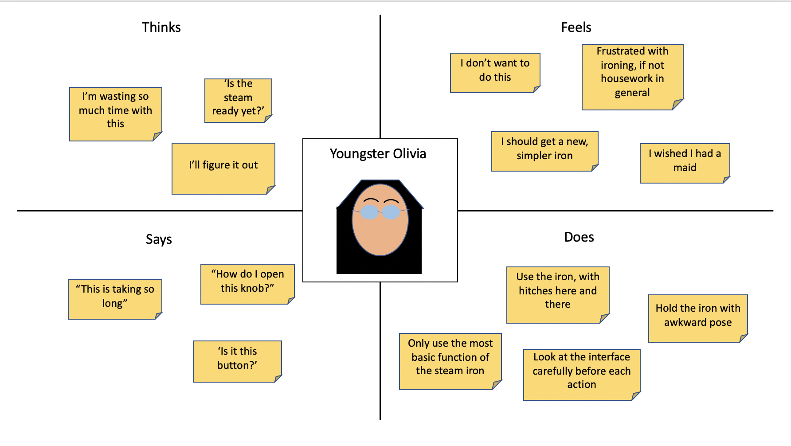

Interview Questions
Question 1:
On a scale of 1 to 5, how would you rate your familiarity with steamed iron in general?
Can you describe your previous experience with other electrical appliances of this sort?
Answer Summary:
Both user#1 and user#3 rated themselves 2/5, noting that they had used one or two smaller models of steamed iron in the past. User#2 rated herself at 4/5, noting that she had used numerous irons in her entire life, from the coal-powered ones to this electric one. She didn’t give herself full score because she could be unaware of the newest steam iron models.
Question 2:
Can you describe how you feel about this steamed iron, particularly about the interface?
Answer Summary:
User#1 and user#3 both noted that they did not expect to wait this long for the water to boil, noting that in their experience with smaller iron models the water boiled almost immediately. User#1 and user#3 also complained that the water tank lid is unintuitive to open. User#3 complained about almost every part of the interface with the exception of heat option while User#1 and user#2, however, agrees that with the exception of the lid the rest of the interface are easily understandable. User#1 and user#3 also noted that this is the largest iron they have ever used.
Question 3:
How would you describe your understandings of the interface of this steamed iron?
Answer Summary:
User#3 noted that she had a working knowledge of this steam iron, but wouldn’t be able to use every function of it. User#1 said that she understood most things, while user#2 noted that she has been using this iron for 20 years and so she understood everything there is to this iron.
Personas
After observing these three users, I created two personas representing two group of users of this steam iron.
Youngster Olivia
Description:
Youngster Olivia grew up in a home where her mother took care of laundry. When she moved out to live alone, she hired a laundry service to take care of her laundry. However, she still needs to iron her own clothes from time-to-time when she needs a specific shirt of hers to be wrinkle-free. She knows how a steam iron is supposed to work, but nevertheless she has her finger-crossed that she doesn’t accidentally ruin her favorite shirt.
Problem:
Her knowledge about ironing is mostly theoretical, so she spent a lot of time looking at the interface and trying to figure out which button she should press.
Representation
This persona represents user#1 and user#3 who don’t usually iron that many clothes although they do possess some knowledge of how a steam iron works.

Veteran-housewife Bertha
Description:
For 40 years, Veteran-housewife Bertha has been doing all the chores in her house, including laundry. Her battle with an evergrowing pile of dirty laundry never ends, and so she invested in a large sturdy iron that will handle any amount of clothes, and she sticked to her tried-and-true iron. Secretly she hopes that her children will see the importance of being proficient at housework or at least have a working knowledge of how to iron a shirt for when they live on their own.
Problem:
Even her finds it difficult to learn the different steps to using an iron model, so she sticks to one she’s familiar with and hope that it lasts her long enough that she never have to buy a new one.
Representation
This persona represents user#2 who has ironed many, many clothes in her entire life and is very familiar with steam irons.
Storyboard
This story board highlights Youngster Olivia’s mild frustration and confusion with the steam iron.
Conclusion
This investigation about a steam iron reveals a tradeoff in design for most specialized tool.
There is a tradeoff between intuitiveness of interface and the complexity of operation
For this steam iron, we might assume that it is more catered towards 'serious users' like professional laundry services
or housewives who use them frequently.
Nevertheless, there still exists many improvement which could be done to the interface such as
making the water tank lid more intuitive to use, or putting an instruction sticker on the product.